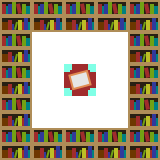
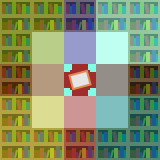

This should look better in the near future. If you're from the far future and want to make this look prettier, drop a PR on the repo.
Enchanting was added in Minecraft Beta 1.9 Prerelease 3. At this time, experience was hard to come by, only available by killing mobs, and so high-level enchantments were difficult to obtain.
However, enchantments in this early buggy state are still of interest. For example, in Beta 1.9 Prerelease 4 (hereafter stylized b1.9-p4), spawners, lit furnaces, infested stone block types, and smooth stone double slabs could be obtained with a silk touch pickaxe. In fact, the motivation behind this project was originally to find the optimal level for getting silk touch on an iron pickaxe.
The current scope of the project is now much broader: to document the mechanics of enchanting in these early days, to track any changes during the time from b1.9-p3 to 1.0.0, and to provide calculators to assist with any enchanting efforts for these versions.
We start with b1.9-p5 solely because a version of MCP was released for it. This and other historical MCP versions can be found on the Minecraft Wiki, and a direct download can be found here.
In these versions of Minecraft, the maximum enchanting level was 50, and removing an item from the slot and re-adding it would refresh the available levels. This means that we will first want to determine how these levels are chosen, as it is obviously very different from modern Minecraft.
The relevant code is found in the onCraftMatrixChanged function of the ContainerEnchantment class, as named by MCP. This is one of only a handful of relevant functions that MCP names. From here on out, most function names I've assigned.
if(itemstack == null || !itemstack.is_enchantable()) {
for(int i = 0; i < 3; i++) {
chosen_xp_levels[i] = 0;
}
}
This code will clear out the xp levels in the table if the item isn't enchantable. This changes the appearance in the UI. If our item is enchantable, we continue with the following code.
int bookshelves = 0;
for(int k = -1; k <= 1; k++) {
for(int i1 = -1; i1 <= 1; i1++) {
if(k == 0 && i1 == 0 || !the_world.isAirBlock(x + i1, y, z + k) || !the_world.isAirBlock(x + i1, y + 1, z + k)) {
continue;
}
if(the_world.getBlockId(x + i1 * 2, y, z + k * 2) == Block.bookShelf.blockID) {
bookshelves++;
}
if(the_world.getBlockId(x + i1 * 2, y + 1, z + k * 2) == Block.bookShelf.blockID) {
bookshelves++;
}
if(i1 == 0 || k == 0) {
continue;
}
if(the_world.getBlockId(x + i1 * 2, y, z + k) == Block.bookShelf.blockID) {
bookshelves++;
}
if(the_world.getBlockId(x + i1 * 2, y + 1, z + k) == Block.bookShelf.blockID) {
bookshelves++;
}
if(the_world.getBlockId(x + i1, y, z + k * 2) == Block.bookShelf.blockID) {
bookshelves++;
}
if(the_world.getBlockId(x + i1, y + 1, z + k * 2) == Block.bookShelf.blockID) {
bookshelves++;
}
}
}
This code calculates how many bookshelves are around us. It does this by iterating over the 8 columns around the bookshelf. If either of the blocks in the column is not air, none of that column's bookshelves can count.
If they are air, then it checks the column coordinates with double the offset as the air column, and bookshelves in that column count towards the total. This counts corner bookshelves for corner air columns and side bookshelves for side air columns.
However, this leaves 8 columns unchecked, namely, those with an offset of (±2, ±1) or (±1, ±2) from the table. To check these, it uses the air corners and selectively doubles the offset for either x or z.
for(int ench_slot = 0; ench_slot < 3; ench_slot++) {
chosen_xp_levels[ench_slot] = EnchantmentHelper.get_xp_offer(random, ench_slot, bookshelves, itemstack);
}
We now populate the enchantment offers. To do so, we must switch over to the EnchantmentHelper class.
Item item = itemstack.getItem();
int k = item.enchantability();
if(k <= 0) {
return 0;
}
if(bookshelves > 30) {
bookshelves = 30;
}
This code gets our item and the enchantability of the item. This enchantability will be positive for any enchantable item. If that enchantability isn't strictly positive, it's unenchantable and we stop. Otherwise, we cap out the number of bookshelves used for calculations at 30 (32 is possible, but 30 allows for a door to be added).
bookshelves = 1 + random.nextInt((bookshelves >> 1) + 1) + random.nextInt(bookshelves + 1); int xp_cost = random.nextInt(5) + bookshelves;
This is finally where the magic happens. We calculate a value xp_cost from the number of bookshelves and some random integers. This code is fairly straightforward to understand (note that the >> 1 operator is equivalent to integer division by 2.)
if(ench_slot == 0) {
return (xp_cost >> 1) + 1;
}
if(ench_slot == 1) {
return (xp_cost * 2) / 3 + 1;
} else {
return xp_cost;
}
We finally return the values shown to the player. If we're in the top slot, this value is l/2+1, rounded down. The second slot gets 2/3*l + 1, rounded down, and the botton slot gets just l. Note that this is called seperately, with different random values, for each slot, so this fractional relationship isn't preserved for any one enchanting table offer, but should be for an overall average.
When a player clicks on a slot in the enchanting table, a function triggers in the ContainerEnchantment class. The first few lines of this code get the item, the xp levels to be consumed, and make some checks that the item can be enchanted. The choose_enchants function of the EnchantmentHelper class then is called to find the valid enchantments.
The first few lines are again just getting the item and a check that it is enchantable. Next, we store the enchantability in the variable j. The enchantability of an item is defined as in the table below.
| Material | Tool | Armor |
|---|---|---|
| Leather/Wood | 15 | 15 |
| Stone/Chain | 5 | 12 |
| Iron | 14 | 9 |
| Gold | 22 | 25 |
| Diamond | 10 | 10 |
We then calculate an l-value from this enchantability (which j is initialized to), the xp cost calculated in the previous section, and some random values.
j = 1 + random.nextInt((j >> 1) + 1) + random.nextInt((j >> 1) + 1); int k = j + xp_cost; float f = ((random.nextFloat() + random.nextFloat()) - 1.0F) * 0.25F; int l = (int)((float)k * (1.0F + f) + 0.5F);
As you can see, the way this randomness is integrated is complicated, and so the resultant probability distribution is non-trivial. k should follow a triangular distribution, as should f, but I'm not certain what the resulting distribution of l is. It is likely somewhat bell-shaped. I plan to add a tool to visualize it on this page in the future.
We now switch to the get_valid_enchants function in the same class. Ultimately, this just iterates over each possible function ID (0-255) and checks if that function exists. If it does exist, it iterates over all possible levels for that function (eg, Efficiency 1 - 5, Silk Touch 1). For each of those, it checks the get_min_levels and get_max_levels functions and checks that l is within the bounds returned by those. In the code, these are defined Enchantment child classes by overriding two functions in the Enchantment class. Those bounds are described in the table below:
To choose enchanting levels (the 3 xp costs shown to the player in the enchant), we rely on the number of nearby bookshelves and some random values. In this version, the max level is 50 instead of 30, enchantment levels are often not shown in increasing order, more bookshelves can be used, and taking an item out of the enchanting slot and reinserting it refreshes the options.
This is a top-down view of an enchanting setup (note that bookshelf sides are shown for clarity). Bookshelves in each of these positions count to the total, either at or 1 block above the y-level of the bookshelf. This means that a total of 32 bookshelves can be in range of the table, however, the number is capped at 30 for calculation purposes. This allows a door to be added at no cost.
The image below indicates how bookshelves can be blocked off by highlighting air blocks and their associated bookshelves in the same color. A non-air block in either block of a column will prevent all of that column's bookshelves from being counted.
Now that we know what the number of bookshelves counted is, we transform it by doing each of the following:
After that calculation, the value is displayed in the slot.